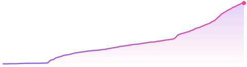

CyrilPeng
某不科学的高数 · Independent Developer
Cross-platform clients·System tools·Local-first AI
Turning “why is this still so clumsy?” into software people actually use.
About
- Cross-platform clients — one Flutter codebase covering Android, Android TV, iOS, Windows, Linux and macOS
- System-level tools — input, scrolling and window behaviour, the kind of low-level feel you can only fix yourself
- Local-first AI — novel generation, character memory, asset workflows; models that live in your own machine, not in a chat box
- Daily drivers: Flutter, Python, TypeScript; desktop and low-level work written by hand
Projects
VeneraNext
A cross-platform comic reader with local libraries, WebDAV sources and third-party online sources — Android, iOS, Windows, Linux and macOS.
★ 2.1k ↓ 59k GPL-3.0

FlowScroll
Brings the browser's middle-click auto-scroll to the whole desktop. Smooth, continuous scrolling for web pages, PDFs, editors and spreadsheets.
★ 300 ↓ 1.8k
Novel-Auto-Generator
A SillyTavern extension: automatic AI novel writing, plus converting plain-text novels into structured lorebooks.
★ 191
KokoroMemo
A local long-term memory core for AI role-play, games and desktop pets. Characters that don't forget, don't bleed into each other, don't misremember.
★ 76 ↓ 1.3k
SillyTavern-Workshop
A workshop for SillyTavern: turning scattered settings into character cards and ready-to-use assets.
★ 67
Also: Game-Save-Manager · obsidian-novel-count · astrbot TTS plugin
Currently
- Polishing VeneraNext's reading flow — aiming for “open and just read”
- Reworking KokoroMemo's memory extraction to reduce misremembering and character bleed
- A few small tools without names yet, released once they actually work
Stack
- Flutter
- Python
- TypeScript
- JavaScript
- GitHub Actions
If any of these saved you some time
A small tip keeps the experiments going — or just come say hi.
Afdian →